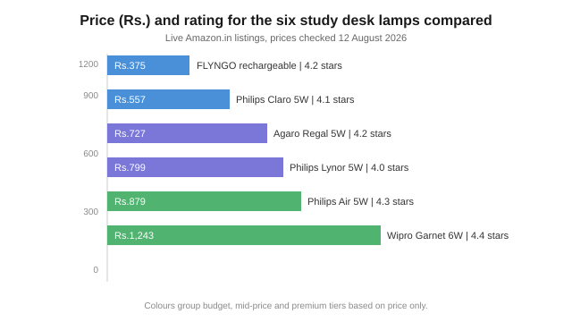

Best Study Desk Lamp for Students in India (2026)
The short version
TL;DR: For most students, the Philips Claro 5W (Rs.557) is the best-value eye-care wired lamp, while the Philips Air 5W (Rs.879, rated 4.3 stars by over 12,000 buyers) is the most trusted pick. Top up to a Wipro Garnet 6W (Rs.1,243) if you need heavier, sweep-arm task lighting for long desk sessions. On a tight budget, the FLYNGO 3-color rechargeable lamp (around Rs.375) sells in huge volumes and covers basic study table needs. Prices checked 12 August 2026 on Amazon.in.What should you look for in a study desk lamp?
Three things matter more than looks. First is flicker. Cheap LED lamps flicker at a frequency your eye can detect even when you cannot see it, and that strains your eyes during long reading sessions. Look for "eye care", "EyeComfort", or "low flicker" in the listing rather than trusting a photo of a bright bulb. Second is the light quality: a color temperature you can shift between cool white for daytime reading and warm light for night study. Third is how it sits with your setup - wired lamps are cheaper and never run out, while rechargeable ones survive power cuts and let you study in bed.
Wattage is the only reliable spec Amazon.in lists across models. A 5W Philips or 6W Wipro LED is genuinely bright enough for a desk; anything below 3W is really a night light, not a study lamp. Lumen figures are rarely stated on these listings, so treat wattage plus the brand's own eye-care claims as your guide.
What are the best study desk lamps for students in India right now?
| Lamp | Type | Price (Aug 2026) | Rating | Best for |
|---|---|---|---|---|
| FLYNGO 3-color rechargeable | Battery, USB | Rs.375 | 4.2 | Tightest budget |
| Philips Claro 5W | Wired, EyeComfort | Rs.557 | 4.1 | Best value |
| Philips Lynor 5W | Rechargeable, 2400mAh | Rs.799 | 4.0 | Long battery |
| Philips Air 5W | Wired, EyeComfort | Rs.879 | 4.3 | Most trusted |
| Agaro Regal 5W | USB-C, foldable | Rs.727 | 4.2 | Modern minimal desk |
| Wipro Garnet 6W | Wired, gooseneck | Rs.1,243 | 4.4 | Heavy task lighting |
Check today's prices on Tata CLiQ → (prices move with sales; verify before buying)
Prices and ratings pulled from Amazon.in listings and their review sections, fetched 12 August 2026. Prices drift with sales, so check the live price before you buy.
Is the Philips Air the safest all-round choice?
Yes, for most people. The Philips Air 5W (Rs.879) carries a 4.3-star rating across more than 12,000 ratings, easily the deepest trust base in this list. Philips marks it with "EyeComfort" technology, its branding for low-flicker, low-glare LED light. For a student who just wants a dependable wired lamp from a brand that will honour a warranty, this is the pick.
Is the Philips Claro the best value at Rs.557?
The Claro 5W (Rs.557) is the value champion. It runs the same EyeComfort LED technology as the pricier Philips lamps, adjusts its angle, and costs less than half of what most students expect to pay for a branded lamp. The trade-off is a small review base (under 50 ratings at the time of writing), so it is newer and less battle-tested than the Air. If you trust the Philips name and want to save roughly Rs.300, this is your lamp.
Should you pick a rechargeable lamp instead of a wired one?
It depends on your power situation. The Philips Lynor 5W (Rs.799) packs a 2400mAh battery and three dimmable color modes, so it keeps studying through outages and moves easily between desk and bed. The budget FLYNGO lamp (Rs.375) is also USB-rechargeable and is genuinely one of the highest-volume sellers in this category, which tells you Indians are buying them in bulk. The catch is that battery cells wear out, so a rechargeable lamp seldom lasts as long as a simple wired one. If your area rarely loses power, a wired Philips costs less and lasts longer.
What about the affordability king under Rs.500?
The FLYNGO 3-color rechargeable lamp is the volume seller here, regularly pushing 4,000-plus units bought a month on Amazon.in with a 4.2-star rating. At around Rs.375 it comes with a pen and phone holder, touch on/off, and three color modes. It will not match a Philips or Wipro for build or light quality, but for a budget student desk it does the job.
Is the Wipro Garnet worth Rs.1,243?
The Wipro Garnet 6W (Rs.1,243) is the overachiever for serious study sessions. It has a higher 6W output than the Philips 5W models, a flexible gooseneck so you can aim light exactly where you need it, three-grade dimming, and 3-in-1 color changing. With a 4.4-star rating across roughly 19,000 ratings, it is the most-reviewed lamp in this roundup and has a service setup to match. It is the one to buy if your desk lighting doubles as your reading light late into the night.

How to pick the right study lamp in five steps
- Set your budget first - the realistic tiers are under Rs.500 (budget, less durable), Rs.500-900 (best value here), or Rs.1,000-plus (heavier, longer-lasting).
- Decide wired versus rechargeable. Wired lasts longer and costs less; rechargeable survives power cuts.
- Look for an eye-care or low-flicker claim in the listing, and prefer a known brand (Philips, Wipro, Agaro) for a real warranty.
- Confirm it has multiple color modes or at least adjustable brightness so you can shift between day and night study.
- Check the latest rating and review count right before you buy - prices and stars change constantly.
FAQ
Which study lamp is best for eye care in India?
Any lamp carrying a low-flicker or eye-care claim from a major brand. The Philips Air 5W (Rs.879, EyeComfort) and Wipro Garnet 6W (Rs.1,243) are the two most-reviewed, most-trusted options for this purpose.
What wattage study lamp is enough?
5W to 6W is the sweet spot for a student desk. It is bright enough for real reading and writing. Below 3W you are buying a night light, not a study lamp.
Should I buy a rechargeable or wired study lamp?
Wired lamps are cheaper and last longer, so choose them if your supply is reliable. Go rechargeable (like the Philips Lynor, Rs.799) if you deal with regular power cuts or want to study away from the desk.
Are cheap Rs.300-500 study lamps worth it?
For basic short sessions, yes - the FLYNGO around Rs.375 is a top seller with a 4.2-star rating. But for daily multi-hour study, spend slightly more on a branded 5W lamp that will not flicker and will outlast the cheap plastic ones.
Does Amazon.in show how bright a study lamp is?
Usually not - most listings state wattage but rarely give lumen output. Use the wattage and the brand's eye-care claims as your guide, and read recent reviews mentioning brightness to set expectations.